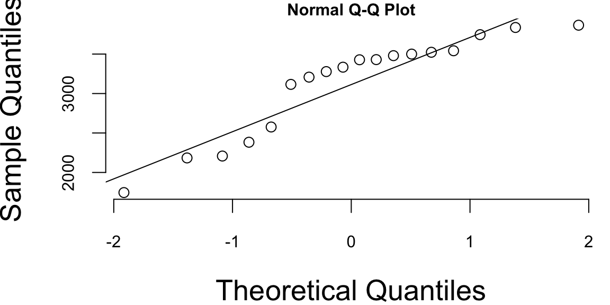
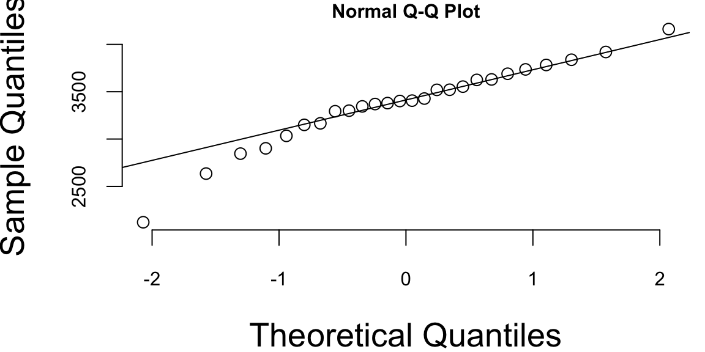
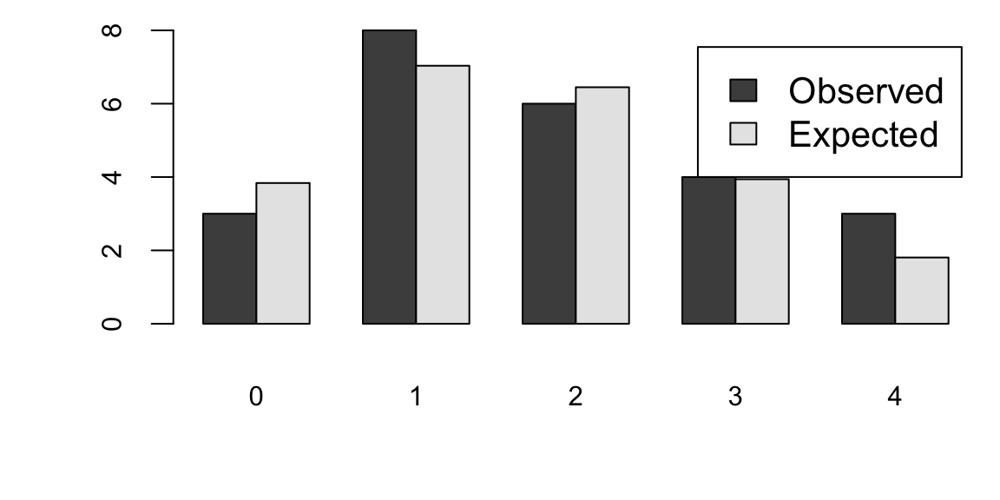
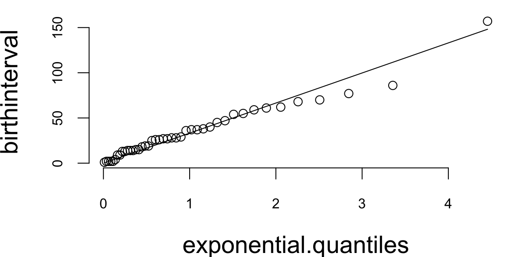
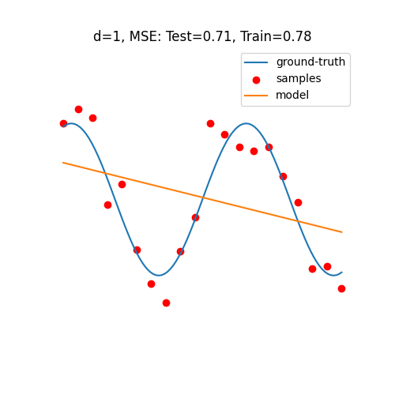
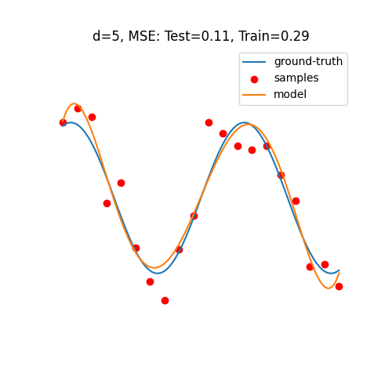
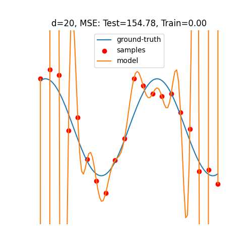
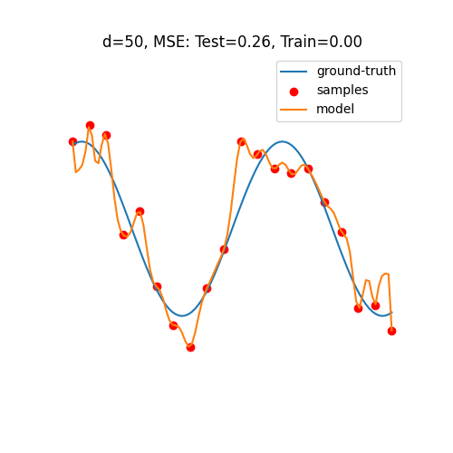
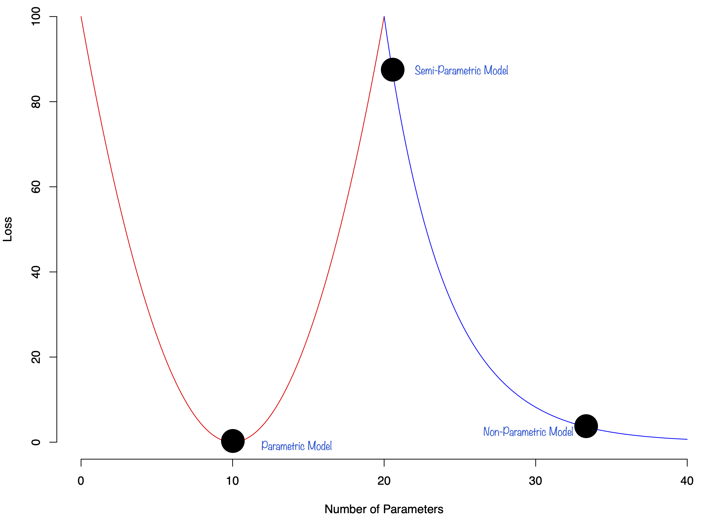
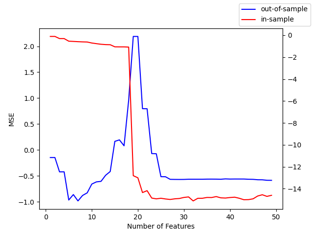

babyboom = read.csv("../data/babyboom.csv")
qqnorm(babyboom$wt)
qqline(babyboom$wt)
\[ \newcommand{\prob}[1]{\operatorname{P}\left(#1\right)} \newcommand{\Var}[1]{\operatorname{Var}\left(#1\right)} \newcommand{\sd}[1]{\operatorname{sd}\left(#1\right)} \newcommand{\Cor}[1]{\operatorname{Corr}\left(#1\right)} \newcommand{\Cov}[1]{\operatorname{Cov}\left(#1\right)} \newcommand{\E}[1]{\operatorname{E}\left(#1\right)} \newcommand{\defeq}{\overset{\text{\tiny def}}{=}} \DeclareMathOperator*{\argmax}{arg\,max} \DeclareMathOperator*{\argmin}{arg\,min} \DeclareMathOperator*{\mini}{minimize} \DeclareMathOperator*{\minf}{minimize \quad} \newcommand{\mininlineeq}[4]{\begin{equation}\label{#4}\mbox{minimize}_{#1}\quad#2\qquad\mbox{subject to }#3\end{equation}} \]
“When you have eliminated impossible, whatever remains, however improbable, must be the truth.” - Sherlock Holmes
Here are a few important considerations when building predictive models:
1. Model Selection: Choosing the right model for the relationship between \(x\) and \(y\) is crucial and involves navigating a fundamental trade-off between model complexity and generalization ability. If the chosen model is too simple (e.g., linear regression when the true relationship is polynomial), it might underfit the data and fail to capture important relationships, leading to high bias and poor performance on both training and test data. Conversely, a model that is too complex (e.g., high-degree polynomials or deep neural networks with insufficient data) might overfit the data by memorizing training examples rather than learning the underlying pattern, resulting in excellent training performance but poor generalization to unseen examples. This problem becomes even more complex when dealing with non-linear relationships, high-dimensional data, or noisy data, where the optimal model complexity is not immediately obvious and may require systematic experimentation with different model architectures, regularization techniques, and hyperparameter tuning to find the right balance between capturing the true signal while avoiding noise.
2. Overfitting and Underfitting: Overfitting occurs when the model fits the training data too closely, capturing not only the true underlying relationship but also random noise and idiosyncrasies specific to the training dataset. This phenomenon typically manifests when a model has too many parameters relative to the amount of training data available, allowing it to essentially “memorize” the training examples rather than learning the generalizable patterns. The model may achieve excellent performance metrics on the training data (low training error) but will perform poorly on new, unseen data (high generalization error). This is because the model has learned to recognize specific noise patterns in the training data that don’t exist in the broader population. Common signs of overfitting include a large gap between training and validation/test performance, or performance that improves on training data while degrading on validation data during training iterations.
Underfitting occurs when the model is too simple and fails to capture the true relationship between x and y, often due to insufficient model complexity or inadequate training. This can happen when using a model that is inherently too simple for the problem at hand (e.g., linear regression for a highly non-linear relationship), when the model hasn’t been trained for enough iterations, or when regularization is applied too aggressively. Underfitting results in poor performance on both training and test data, as the model lacks the capacity to learn the underlying patterns in the data. The model essentially misses important features or relationships that are necessary for accurate predictions. Unlike overfitting, underfitting typically shows similar poor performance across training, validation, and test sets, indicating that the model is not capturing the signal in the data regardless of the dataset.
3. Data Quality and Quantity: The accuracy of predictions heavily relies on the quality and quantity of the available data. If the data is noisy, inaccurate, or incomplete, it can lead to misleading predictions. A sufficient amount of data is also crucial to ensure the model can learn the underlying relationship effectively. Insufficient data can result in underfitting and poor generalization.
Data quality issues can manifest in various forms, including missing values, inconsistent formatting, labeling errors, and biased sampling. These problems are particularly acute in machine learning applications where large volumes of labeled data are required for training. To address these challenges, companies have emerged that specialize in data quality improvement and annotation services.
Companies like Scale AI and Toloka provide platforms that help organizations improve data quality through human-in-the-loop annotation and validation processes. These platforms employ large networks of human annotators who can perform tasks such as image labeling, text classification, data validation, and quality control. Scale AI, for example, offers services for creating high-quality training datasets through human annotation, with built-in quality control mechanisms that include multiple annotators per task and consensus-based validation. Their platform can handle various data types including images, text, and video, making it suitable for computer vision, natural language processing, and other AI applications.
Toloka, similarly, provides a crowdsourcing platform that connects businesses with a global network of contributors who can perform data labeling, content moderation, and quality assessment tasks. Their platform includes quality control features such as skill-based routing, where tasks are assigned to annotators based on their demonstrated expertise, and dynamic overlap, where multiple workers verify the same data to ensure accuracy.
These platforms help address several key data quality challenges: they can identify and correct labeling errors through consensus mechanisms, handle missing data through targeted collection efforts, and ensure consistency in data formatting and annotation standards. By leveraging human expertise at scale, these services enable organizations to create more reliable training datasets, which in turn leads to better-performing machine learning models and more accurate predictions.
4. Model Explainability: In many applications, it is crucial to understand how the model arrives at its predictions. This is particularly important in areas like healthcare or finance, where transparency and interpretability are essential. Some models, particularly complex ones like deep neural networks, can be difficult to interpret, making it challenging to understand the rationale behind their predictions. However, modern machine learning has developed several techniques to address this challenge and make complex models more interpretable.
The importance of explainability extends beyond mere curiosity about model behavior. In healthcare applications, doctors need to understand why a model recommended a particular diagnosis or treatment plan to make informed decisions and maintain trust in the system. A model that predicts a patient has a 90% chance of having cancer but cannot explain which symptoms or test results led to this conclusion would be of limited clinical value. Similarly, in financial services, regulators require explanations for credit decisions to ensure compliance with fair lending laws and to prevent discriminatory practices. When a loan application is denied, both the applicant and regulatory bodies need to understand the specific factors that influenced this decision.
In legal and compliance contexts, explainability becomes a legal requirement. The European Union’s General Data Protection Regulation (GDPR) includes a “right to explanation” that allows individuals to request information about automated decisions that affect them. This has created a legal imperative for organizations to develop explainable AI systems. In criminal justice applications, where AI systems might be used for risk assessment or sentencing recommendations, the stakes are particularly high. Judges, lawyers, and defendants all need to understand how these systems arrive at their conclusions to ensure fair and just outcomes.
One prominent approach is the use of interpretable surrogate models, such as LIME (Local Interpretable Model-agnostic Explanations) and SHAP (SHapley Additive exPlanations). These methods work by approximating the complex model’s behavior in the vicinity of a specific prediction using simpler, more interpretable models like linear regression or decision trees. LIME, for instance, creates local explanations by sampling points around the prediction of interest and fitting a linear model to explain the model’s behavior in that neighborhood. This allows us to understand which features contributed most to a particular prediction, even for complex models like deep neural networks.
Another powerful technique is attention mechanisms, which have become increasingly popular in natural language processing and computer vision. Attention mechanisms allow models to “focus” on specific parts of the input when making predictions, providing a form of built-in interpretability. For example, in image classification tasks, attention maps can highlight which regions of an image the model is focusing on when making its prediction, making it easier to understand the model’s decision-making process.
Gradient-based methods offer another approach to model interpretability. Techniques like Grad-CAM (Gradient-weighted Class Activation Mapping) use gradients to identify which parts of the input are most important for the model’s prediction. By computing the gradient of the model’s output with respect to the input features, these methods can create heatmaps that show which features or regions contributed most to the final prediction.
For tree-based models like random forests and gradient boosting machines, built-in feature importance measures provide natural interpretability. These methods can rank features based on their contribution to the model’s predictive performance, offering insights into which variables are most important for making predictions.
Model distillation techniques represent another approach, where a complex model (the teacher) is used to train a simpler, more interpretable model (the student) that mimics the teacher’s behavior. The student model, being simpler, is easier to interpret while maintaining much of the teacher’s predictive performance.
Finally, counterfactual explanations provide a different type of interpretability by showing what changes to the input would be needed to change the model’s prediction. For example, if a loan application is rejected, a counterfactual explanation might show that the application would have been approved if the applicant’s income were $10,000 higher or if their credit score were 50 points better.
These modern interpretability techniques have made it possible to understand and explain the behavior of even the most complex models, addressing the “black box” problem that has historically limited the adoption of advanced machine learning methods in critical applications where transparency is essential.
5. Computational Cost: Training and using prediction models can be computationally expensive, especially for complex models with large datasets. This can limit their applicability in resource-constrained environments. Finding a balance between model complexity, accuracy, and computational cost is critical for practical applications.
The computational demands of machine learning models have been significantly addressed through the development of specialized hardware, particularly Graphics Processing Units (GPUs). Originally designed for rendering graphics in video games, GPUs have become essential for deep learning due to their parallel processing architecture. Unlike traditional Central Processing Units (CPUs) that process tasks sequentially, GPUs can perform thousands of mathematical operations simultaneously, making them ideal for the matrix multiplications and tensor operations that are fundamental to neural network training. This parallel processing capability has reduced training times from weeks to hours or even minutes for many deep learning models, democratizing access to advanced machine learning techniques.
However, the computational cost challenge extends beyond just training to the deployment phase, where models need to run efficiently in production environments. This has led to the emergence of edge computing as a crucial solution. Edge computing involves processing data and running models closer to where the data is generated, rather than sending everything to centralized cloud servers. This approach offers several advantages for machine learning applications: reduced latency for real-time predictions, lower bandwidth costs by processing data locally, and improved privacy by keeping sensitive data on local devices.
Edge computing is particularly important for applications requiring real-time decision making, such as autonomous vehicles, industrial IoT systems, and mobile applications. For example, a self-driving car cannot afford the latency of sending sensor data to a cloud server and waiting for predictions to return; it needs to process information and make decisions locally within milliseconds. Similarly, smart manufacturing systems use edge computing to monitor equipment and predict maintenance needs in real-time without the delays associated with cloud processing.
Quantization and lower precision calculations have emerged as powerful techniques for reducing computational costs while maintaining model performance. Traditional neural networks use 32-bit floating-point numbers (FP32) for all calculations, which provides high precision but requires significant computational resources and memory. Quantization reduces the precision of these numbers, typically to 16-bit (FP16), 8-bit integers (INT8), or even 4-bit integers (INT4), dramatically reducing both memory usage and computational requirements. For example, converting from FP32 to INT8 can reduce memory usage by 75% and computational cost by 2-4x, while often maintaining acceptable accuracy levels. This is particularly valuable for deployment on edge devices with limited resources, such as smartphones, IoT devices, and embedded systems. Modern hardware, including specialized AI accelerators like Google’s Tensor Processing Units (TPUs) and NVIDIA’s Tensor Cores, are specifically designed to handle these lower precision calculations efficiently, further reducing the computational cost barrier.
The trade-offs between computational cost and model performance are becoming increasingly sophisticated. Techniques like model pruning, which removes unnecessary connections from neural networks, can create smaller, faster models. Knowledge distillation allows large, complex models to transfer their knowledge to smaller, more efficient models that can run on resource-constrained devices.
These developments have created a spectrum of deployment options, from powerful cloud-based systems that can run the most complex models to lightweight edge devices that can perform basic predictions locally. The choice depends on the specific requirements of the application, including latency requirements, accuracy needs, privacy concerns, and cost constraints. As hardware continues to improve and optimization techniques become more sophisticated, the computational cost barrier to deploying machine learning models continues to decrease, opening up new possibilities for AI applications in previously inaccessible domains.
6. Ethical Considerations: Predictions can have significant real-world consequences, raising ethical concerns about bias, fairness, and potential misuse. It is crucial to consider the potential harms and unintended consequences of predictions and implement safeguards to mitigate them.
The ethical implications of predictive models have become increasingly prominent as these systems are deployed in critical domains such as healthcare, criminal justice, employment, and financial services. One of the most significant concerns is algorithmic bias, which can perpetuate or amplify existing societal inequalities. For example, facial recognition systems have been shown to have higher error rates for people of color, potentially leading to wrongful arrests or surveillance. Similarly, hiring algorithms trained on historical data may perpetuate gender or racial biases present in past hiring decisions, creating a feedback loop that reinforces discrimination.
Fairness in machine learning has emerged as a critical research area, with multiple definitions and approaches to ensure equitable treatment across different demographic groups. Statistical parity, equalized odds, and individual fairness are among the various fairness metrics that can be applied depending on the specific context and requirements of the application. However, achieving fairness often involves trade-offs with model accuracy, and different fairness definitions may conflict with each other, requiring careful consideration of which definition is most appropriate for a given use case.
The potential for misuse of predictive models is another significant concern. Models designed for legitimate purposes can be repurposed for harmful applications, such as using facial recognition for mass surveillance or employing predictive policing algorithms that disproportionately target certain communities. Additionally, the increasing sophistication of deepfake technology, which uses predictive models to generate realistic but fake images, videos, or audio, raises concerns about misinformation and manipulation.
Privacy concerns arise when predictive models require access to sensitive personal data. The collection, storage, and processing of personal information for training and deploying these models can violate individual privacy rights and create risks of data breaches. Differential privacy techniques, which add carefully calibrated noise to data or model outputs, have emerged as a promising approach to protect individual privacy while maintaining model utility.
Transparency and accountability are essential for addressing ethical concerns. Organizations deploying predictive models must be able to explain their decisions and be held accountable for any harms that result. This includes maintaining audit trails, implementing human oversight mechanisms, and establishing clear procedures for addressing complaints or errors. The concept of “algorithmic impact assessments” has been proposed as a framework for evaluating the potential social impacts of automated decision-making systems before deployment.
Regulatory frameworks are evolving to address these ethical challenges. The European Union’s General Data Protection Regulation (GDPR) includes provisions for automated decision-making and profiling, while various jurisdictions are developing specific regulations for AI systems. These regulations often require transparency, human oversight, and the ability to contest automated decisions.
Technical approaches to addressing ethical concerns include adversarial training to reduce bias, interpretability techniques to increase transparency, and robust testing procedures to identify potential harms before deployment. Regular monitoring and updating of deployed models is also crucial, as societal norms and legal requirements evolve over time.
Addressing these challenges requires careful consideration of the specific problem, selection of appropriate techniques, and continuous evaluation and improvement of the prediction model. It also requires collaboration between technical experts, domain specialists, ethicists, and stakeholders to ensure that predictive models serve the public good while minimizing potential harms.
As we have discussed at the beginning of this chapter the predictive rule can be used for two purposes: prediction and interpretation. The goal of interpretation is to understand the relationship between the input and output variables. The two goals are not mutually exclusive, but they are often in conflict. For example, a model that is good at predicting the target variable might not be good at interpreting the relationship between the input and output variables. A nice feature of a linear model is that it can be used for both purposes, unlike more complex predictive rules with many parameters that can be difficult to interpret.
Typically the problem of interpretation requires a simpler model. We prioritize models that are easy to interpret and explain, even if they have slightly lower predictive accuracy. Also, evaluation metrics are different, we typically use coefficient of determination (R-squared) or p-values, which provide insights into the model’s fit and the significance of the estimated relationships.
The choice between using a model for prediction or interpretation depends on the specific task and desired outcome. If the primary goal is accurate predictions, a complex model with high predictive accuracy might be preferred, even if it is less interpretable. However, if understanding the underlying relationships and causal mechanisms is crucial, a simpler and more interpretable model might be chosen, even if it has slightly lower predictive accuracy. Typically interpretive models are used in scientific research, social sciences, and other fields where understanding the underlying causes and relationships is crucial.
In practice, it’s often beneficial to consider both prediction and interpretation when building and evaluating models. However, it is not unusual to build two different models, one for prediction and one for interpretation. This allows for a more nuanced analysis of the data and can lead to better insights than using a single model for both purposes.
Breiman’s Two Cultures
Statistical prediction problems are of great practical and theoretical interest. The deep learning predictor has a number of advantages over traditional predictors, including that
Let \(x\) be a high dimensional input containing a large set of potentially relevant data. Let \(y\) represent an output (or response) to a task which we aim to solve based on the information in \(x\). Brieman [2000] summaries the difference between statistical and machine learning philosophy as follows.
“There are two cultures in the use of statistical modeling to reach conclusions from data. One assumes that the data are generated by a given stochastic data model. The other uses algorithmic models and treats the data mechanism as unknown.”
“The statistical community has been committed to the almost exclusive use of data models. This commitment has led to irrelevant theory, questionable conclusions, and has kept statisticians from working on a large range of interesting current problems.”
“Algorithmic modeling, both in theory and practice, has developed rapidly in fields outside statistics. It can be used both on large complex data sets and as a more accurate and informative alternative to data modeling on smaller data sets. If our goal as a field is to use data to solve problems, then we need to move away from exclusive dependence on data models and adopt a more diverse set of tools.”
What makes a good model? If the goal is prediction, then the model is as good as its prediction. The easiest way to visualize the quality of the prediction is to plot \(y\) vs \(\hat y\). In the case of the linear regression model, the prediction interval is defined by \[ s\sqrt{1+\frac{1}{n}+\frac{(x-\bar x)^2}{\sum_{i=1}^n(x_i-\bar x)^2}} \] where \(s\) is the standard deviation of the residuals. The prediction interval is the confidence interval for the prediction. The prediction interval is wider than the confidence interval because it includes the uncertainty in the prediction.
The bias-variance tradeoff is a fundamental property of statistical models. The bias is the difference between the expected value of the prediction and the true value \(y-\hat y\). The variance is the variance of the prediction. The bias-variance tradeoff says that the bias and variance are inversely related. A model with high bias has low variance and a model with low bias has high variance. The bias-variance tradeoff is a consequence of the fact that the expected value of the prediction is the sum of the bias and the variance.
\[
MSE = E(y-\hat y)^2 = E(y-\mathbb{E}(\hat y))^2 + E(\mathbb{E}(\hat y)-\hat y)^2
\] The bias-variance tradeoff is a consequence of the fact that the expected value of the prediction is the sum of the bias and the variance.
Before deciding on a parametric model for a dataset. There are several tools that we use to choose the appropriate model. These include
The two most common tools for exploratory data analysis are Q-Q plot, scatter plots and bar plots/histograms.
A Q-Q plot simply compares the quantiles of your data with the quantiles of a theoretical distribution (like normal, exponential, etc.). Quantile is the fraction (or percent) of points below the given value. That is, the \(i\)-th quantile is the point \(x\) for which \(i\)% of the data lies below \(x\). On a Q-Q plot, if the two data sets come from a population with the same distribution, we should see the points forming a line that’s roughly straight. More precisely, if the two data sets \(x\) and \(y\) come from the same distribution, then the points \((x_{(i)}, y_{(i)})\) should lie roughly on the line \(y = x\). If \(y\) comes from a distribution that’s linear in \(x\), then the points \((x_{(i)}, y_{(i)})\) should lie roughly on a line, but not necessarily on the line \(y = x\).
Example 7.1 (Normal Q-Q plot) Figure 7.1 shows the normal Q-Q plot for the Data on birth weights of babies born in a Brisbane hospital on December 18, 1997. The data set contains 44 records. A more detailed description of the data set can be found in UsingR manual.
babyboom = read.csv("../data/babyboom.csv")
qqnorm(babyboom$wt)
qqline(babyboom$wt)Visually, the answer to answer the question “Are Birth Weights Normally Distributed?” is no. We can see that on the left side of the plot the points are below the line. This indicates that the data is skewed to the left. The data is not normally distributed.
The Q-Q plots look different if we split the data based on the gender
g = babyboom %>% filter(gender=="girl") %>% pull(wt)
b = babyboom %>% filter(gender=="boy") %>% pull(wt)
qqnorm(g); qqline(g)
qqnorm(b); qqline(b)

Histogram of baby weights by gender
How about the times in hours between births of babies?
hr = ceiling(babyboom$running.time/60)
BirthsByHour = tabulate(hr)
# Number of hours with 0, 1, 2, 3, 4 births
ObservedCounts = table(BirthsByHour)
# Average number of births per hour
BirthRate=sum(BirthsByHour)/24
# Expected counts for Poisson distribution
ExpectedCounts=dpois(0:4,BirthRate)*24
# bind into matrix for plotting
ObsExp <- rbind(ObservedCounts,ExpectedCounts)
barplot(ObsExp,names=0:4, beside=TRUE,legend=c("Observed","Expected"))
What about the Q-Q plot?
# birth intervals
birthinterval=diff(babyboom$running.time)
# quantiles of standard exponential distribution (rate=1)
exponential.quantiles = qexp(ppoints(43))
qqplot(exponential.quantiles, birthinterval)
lmb=mean(birthinterval)
lines(exponential.quantiles,exponential.quantiles*lmb) # Overlay a line
Here
ppoints function computes the sequence of probability pointsqexp function computes the quantiles of the exponential distributiondiff function computes the difference between consecutive elements of a vectorA parametric model that we choose to fit to data is chosen from a family of functions. Then, we use optimization to find the best model from that family. To find the best model we either minimize empirical loss or maximize the likelihood. We also established, that when \(y \sim N(f(x\mid \beta),\sigma^2)\) then mean squared error loss and negative log-likelihood are the same function. \[ \E{y | x} = f(\beta^Tx) \]
For a regression model, an empirical loss measures a distance between fitted values and measurements and the goal is to minimize it. A typical choice of loss function for regression is \[ L (y,\hat y) = \dfrac{1}{n}\sum_{i=1}^n |y_i - f(\beta^Tx_i)|^p \] When \(p=1\) we have MAE (mean absolute error), \(p=2\) we have MSE (mean squared error).
Finding an appropriate family of functions is a major problem and is called model selection problem. For example, the choice of input variables to be included in the model is part of the model selection process. Model selection involves determining which predictors, interactions, or transformations should be included in the model to achieve the best balance between complexity and predictive accuracy. In practice, we often encounter several models for the same dataset that perform nearly identically, making the selection process challenging.
It is important to note that a good model is not necessarily the one that fits the data perfectly. Overfitting can occur when a model is overly complex, capturing noise rather than the underlying pattern. A good model strikes a balance between fitting the data well and maintaining simplicity to ensure generalizability to new, unseen data. For instance, including too many parameters can lead to a perfect fit when the number of observations equals the number of parameters, but such a model is unlikely to perform well on out-of-sample data.
The goal of model selection is not only to achieve a good fit but also to reduce complexity by excluding unnecessary parameters. This process typically involves selecting a model from a relevant class of functions while keeping in mind the trade-offs between bias, variance, and model complexity. Techniques such as cross-validation, information criteria (e.g., AIC, BIC), and regularization methods are commonly used to guide the model selection process.
The model selection task is sometimes one of the most consuming parts of the data analysis. Unfortunately, there is no single rule to find the best model. One way to think about the model choice problem as yet another optimization problem, with the goal to find best family of functions that describe the data. With a small number of predictors we can do brute force (check all possible models). For example, with \(p\) predictors there are \(2^p\) possible models with no interactions. Thus, the number of potential family functions is huge even for modest values of \(p\). One cannot consider all transformations and interactions.
Our goal is to build a model that predicts well for out-of-sample data, e.g. the data that was not used for training. Eventually, we are interested in using our models for prediction and thus, the out of sample performance is the most important metric and should be used to choose the final model. In-sample performance is of little interest when predictive model need to be chosen, as one of the winners of Netflix prize put it, “It’s like predicting how much someone will like a movie, having them watch it and tell you how much they really liked it”. The out-of-sample performance is the final judge of the quality of our model. The goal is to use data to find a pattern that we can exploit. The pattern will be “statistical” in its nature. To uncover the pattern we start with a training dataset, denoted by \[ D = (y_i,x_i)_{i=1}^n \] and to test the validity of our mode we use out-of-sample testing dataset \[ D^* = (y_j^*, x_j^*)_{j=1}^m, \] where \(x_i\) is a set of \(p\) predictors ans \(y_i\) is response variable.
A good predictor will “generalize” well and provide low MSE out-of-sample. These are a number of methods/objective functions that we will use to find, \(\hat f\). In a parameter-based style we will find a black box. There are a number of ways to build our black box model. Our goal is to find the map \(f\) that approximates the process that generated the data. For example data could be representing some physical observations and our goal is recover the “laws of nature" that led to those observations. One of the pitfalls is to find a map \(f\) that does not generalize. Generalization means that our model actually did learn the”laws of nature" and not just identified patterns presented in training. The lack of generalization of the model is called over-fitting. It can be demonstrated in one dimension by remembering the fact from calculus that any set of \(n\) points can be approximated by a polynomial of degree \(n\), e.g we can alway draw a line that connects two points. Thus, in one dimension we can always find a function with zero empirical risk. However, such a function is unlikely to generalize to the observations that were not in our training data. In other words, the empirical risk measure for \(D^*\) is likely to be very high. Let us illustrate that in-sample fit can be deceiving.
Example 7.2 (Hard Function) Say we want to approximate the following function \[ f(x) = \dfrac{1}{1+25x^2}. \] This function is simply a ratio of two polynomial functions and we will try to build a liner model to reconstruct this function
x = seq(-2,2,by=0.01)
y = 1/(1+25*x^2)
# Approximate with polynomial of degree 1 and 2
m1 = lm(y~x)
m2 = lm(y~poly(x,2))
# Approximate with polynomial of degree 20 and 5
m20 = lm(y~poly(x,20))
m5 = lm(y~poly(x,5))
x = seq(-3,3,by=0.01)
y = 1/(1+25*x^2)
plot(x,y,type='l',col='black',lwd=2)
lines(x,predict(m1,list(x=x)),lwd=2, col=1)
lines(x,predict(m2,poly(x,2)),lwd=2, col=2)
lines(x,predict(m5,poly(x,5)),lwd=2, col=3)
lines(x,predict(m20,poly(x,20)),lwd=2, col=4)
legend("topright", legend=c("f(x)","m1","m2","m5","m20"), col=c("black",1:4), lty=1, cex=0.8, bty='n')Figure 7.2 shows the function itself (black line) on the interval \([-3,3]\). We used observations of \(x\) from the interval \([-2,2]\) to train the data (solid line) and from \([-3,-2) \cup (2,3]\) (dotted line) to test the model and measure the out-of-sample performance. We tried four different linear functions to capture the relations. We see that linear model \(\hat y = \beta_0 + \beta_1 x\) is not a good model. However, as we increas the degree of the polynomial to 20, the resulting model \(\hat y = \beta_0 + \beta_1x + \beta_2 x^2 +\ldots+\beta_{20}x^{20}\) does fit the training data set quite well, but does very poor job on the test data set. Thus, while in-sample performance is good, the out-of sample performance is unsatisfactory. We should not use the degree 20 polynomial function as a predictive model. In practice in-sample out-of-simple loss or classification rates provide us with a metric for providing horse race between different predictors. It is worth mentioning here there should be a penalty for overly complex rules which fits extremely well in sample but perform poorly on out-of-sample data. As Einstein famous said “model should be simple, but not simpler.”
To a Bayesian, the solution to these decision problems are rather obvious: compute posterior distributions, and then make decisions by maximizing expected utility, where the posterior distribution is used to calculate the expectations. Classical solutions to these problems are different, and use repeated sampling ideas, whereby the performance of a decision rule is judged on its performance if the same decision problem were repeated infinitely. Thus, the decisions are made based on their population properties. One of the main uses of statistical decision theory is to compare different estimators or hypothesis testing procedures. This theory generates many important findings, most notably that many of the common classical estimators are “bad”,in some sense, and that Bayesian estimators are always “good”.
These results have major implications for empirical work and practical applications, as they provide a guide for forecasting.
Type II MLE: Marginal MLE (MMLE)
One approach to find “plug-in” estimates of hyper-parameters (a.k.a. amount of regularisation) is to use the marginal likelihood defined by
\[ m(y | \lambda) = \int p(y | \theta) p(\theta | \lambda) d\theta. \]
We then select
\[ \hat{\lambda} = \arg\max_\lambda \; \log m(y | \lambda) \]
Essentially, we have a new objective function for finding the hyper-parameters (tuning parameters).
We can add a further regularisation penalty \(-\log p(\lambda)\) too.
As J.W.Tukey stated at the 1972 American Statistical Association meeting:
“A feeling that any gains possible from a complicated procedurelike Stein’s could not be worththe extratroubl”
Should also place a prior on hyper-parameters \(p(\lambda)\). The optimal Bayes estimator under quadratic loss is
\[ \hat{\theta}(y) = E(\theta | y) = E_{\lambda | y} \left( E(\theta | \lambda, y) \right). \]
where \(E_{\lambda | y}\) is taken with respect to the marginal posterior
\[ p(\lambda | y) = \frac{m(y | \lambda) p(\lambda)}{m(y)} \]
The choice of \(p(\lambda)\) is an issue. Jeffreys, Polson and Scott propose the use of half-Cauchy priors \(C^+(0,1)\)-priors.
For any predictive model we seek to achieve best possible results, i.e. smallest MSE or misclassification rate. However, a model performance can be different as data used in one training/validation split may produce results dissimilar to another random split. In addition, a model that performed well on the test set may not produce good results given additional data. Sometimes we observe a situation, when a small change in the data leads to large change in the final estimated model, e.g. parameters of the model. These results exemplify the bias/variance tradeoff, where increasing model bias produces large variance in the final results. Similarly, low bias results in low variance, but can also produce an oversimplification of the final model. While Bias/variance concept is depicted below.

Example 7.3 (Bias-variance) We demonstrate bias-variance concept using Boston housing example. We fit a model \(\mathrm{medv} = f(\mathrm{lstat})\). We use polynomial functions to approximate this relation. We fitted twelve polynomial functions with degree \(1,\ldots,12\) ten time. Each time we randomly selected 20% of sample for testing and the rest for training. We estimated in-of-sample performance (bias) and out-of-sample performance by calculating MSE on training and testing sets correspondingly. For each polynomial \(f\) we averaged MSE from each of the ten models.
Figure 7.4 (a) shows bias and variance for our twelve different models. As expected, bias increases while variance increases as model complexity grows. On the other hand out-of-sample MSE is a U-shaped curve. The optimal model is the one that has smallest out-of-sample MSE. In our case it is polynomial of degree 5!


Let’s take another, a more formal, look at bias-variance trade-off for a linear regression problem. We are interested in the decomposition of the error \(\E{(y-\hat y)^2}\) as a function of bias \(\E{y-\hat y}\) and variance \(\Var{\hat y}\).
Here \(\hat y = \hat f_{\beta}(x)\) prediction from the model, and \(y = f(x) + \epsilon\) is the true value, which is measured with noise \(\Var{\epsilon} = \sigma^2\), \(f(x)\) is the true unknown function. The expectation above measures squared error of our model on a random sample \(x\). \[ \begin{aligned} \E{(y - \hat{y})^2} & = \E{y^2 + \hat{y}^2 - 2 y\hat{y}} \\ & = \E{y^2} + \E{\hat{y}^2} - \E{2y\hat{y}} \\ & = \Var{y} + \E{y}^2 + \Var{\hat{y}} + \E{\hat{y}}^2 - 2f\E{\hat{y}} \\ & = \Var{y} + \Var{\hat{y}} + (f^2 - 2f\E{\hat{y}} + \E{\hat{y}}^2) \\ & = \Var{y} + \Var{\hat{y}} + (f - \E{\hat{y}})^2 \\ & = \sigma^2 + \Var{\hat{y}} + \mathrm{Bias}(\hat{y})^2\end{aligned} \] Here we used the following identity: \(\Var{X} = \E{X^2} - \E{X}^2\) and the fact that \(f\) is deterministic and \(\E{\epsilon} = 0\), thus \(\E{y} = \E{f(x)+\epsilon} = f + \E{\epsilon} = f\).
If the data set at-hand is small and we cannot dedicate large enough sample size for testing, simply measuring error on test data set can lead to wrong conclusions. When size of the testing set \(D^*\) is small, the estimated out-of-sample performance is of high variance, depending on precisely which observations are included in the test set. On the other hand, when training set \(D^*\) is a large fraction of the entire sample available, estimated out-of-sample performance will be underestimated. Why?
A trivial solution is to perform the training/testing split randomly several times and then use average out-of-sample errors. This procedure has two parameters, the fraction of samples to be selected for testing \(p\) and number of estimates to be performed \(K\). The resulting algorithm is as follows
fsz = as.integer(p*n)
error = rep(0,K)
for (k in 1:K)
{
test_ind = sample(1:n,size = fsz)
training = d[-test_ind,]
testing = d[test_ind,]
m = lm(y~x, data=training)
yhat = predict(m,newdata = testing)
error[k] = mean((yhat-testing$y)^2)
}
res = mean(error)Figure 7.5 shows the process of splitting data set randomly five times.
Cross validation modifies the random splitting approach uses more “disciplined” way to split data set for training and testing. Instead of randomly selecting training data points, CV chooses consecutive observations and thus, each data point is used once for testing. As the random approach, CV helps addressing the high variance issue of out-of-sample performance estimation when data set available is small. Figure 7.6 shows the process of splitting data set five times using cross-validation approach.


Training set (red) and testing set (green)
Example 7.4 (Simulated) We use simulated data set to demonstrate difference between estimated out-of-sample performance using random 20/80 split, 5-fold cross-validation and random split. We used \(x=-2,-1.99,-1.98,\ldots,2\) and \(y = 2+3x + \epsilon, ~ \epsilon \sim N(0,\sqrt{3})\). We simulated 35 datasets of size 100. For each of the simulated data sets, we fitted a linear model and estimated out-of-sample performance using three different approaches. Figure 7.7 compares empirical distribution of errors estimated from 35 samples.

As we can see the estimated out-of-sample performance by a training set approach is of high variance. While, both cross-validation and bootstrap approaches lead to better estimates, they require model to be fitted 5 times, which can be computationally costly for a complex model. On the other hand, estimate from cross-validation is of lower variance and less bias compared to the bootstrap estimate. Thus, we should prefer cross-validation.
When sample size is small and it is not feasible to divide your data into training and validation data sets, an information criterion could be used to assess a model. We can think of information criterion as a metric that “approximates” out-os-sample performance of the model. Akaike’s Information Criterion (AIC) takes the form \[ \mathrm{AIC} = log(\sigma_k^2) + \dfrac{n+2k}{n} \] \[ \hat{\sigma}_k^2 = \dfrac{SSE_k}{n} \] Here \(k\) = number of coefficients in regression model, \(SSE_k\) = residual sum of square, \(\hat{\sigma}_k^2\) = MLE estimator for variance. We do not need to proceed sequentially, each model individually evaluated
AIC is derived using the Kullback-Leibler information number. It is a ruler to measure the similarity between the statistical model and the true distribution. \[ I(g ; f) = E_g\left(\log \left\{\dfrac{g(y)}{f(y)}\right\}\right) = \int_{-\infty}^{\infty}\log \left\{\dfrac{g(y)}{f(y)}\right\}g(y)dy. \] Here - \(I(g ; f) > 0\) - \(I(g ; f) = 0 \iff g(u) = f(y)\) - \(f \rightarrow g\) as \(I(g ; f) \rightarrow 0\)
To estimate \(I(g ; f)\), we write \[ I(g ; f) = E_g\left(\log \left\{\dfrac{g(y)}{f(y)}\right\}\right) = E_g (\log g(y)) - E_g(\log f(y)) \] Only the second term is important in evaluating the statistical model \(f(y)\). Thus we need to estimate \(E_g(\log f(y))\). Given sample \(z_1,...,z_n\), and estimated parameters \(\hat{\theta}\) a naive estimate is \[ \hat{E}_g(\log f(y)) = \dfrac{1}{n} \sum_{i=1}^n \log f(z_i) = \dfrac{\ell(\hat{\theta})}{n} \] where \(\ell(\hat{\theta})\) is the log-likelihood function for model under test.
Akaike showed that the bias is approximately \(k/n\) where \(k\) is the number of parameters \(\theta\). Therefore we use \[ \hat{E}_g(\log f(y)) = \dfrac{\ell(\hat{\theta})}{n} - \dfrac{k}{n} \] Which leads to AIC \[ AIC = 2n \hat{E}_g(\log f(y)) = 2 \ell(\hat{\theta}) - 2k \]
Akaike’s Information Criterion (AIC) \[ \mathrm{AIC} = \log(\sigma_k^2) + \dfrac{n+2k}{n} \] Controls for balance between model complexity (\(k\)) and minimizing variance. The model selection process involve trying different \(k\), chose model with smallest AIC.
A slightly modified version designed for small samples is the bias corrected AIC (AICc). \[ \mathrm{AICc} = \log(\hat{\sigma}_k^2) + \dfrac{n+k}{n-k-2} \] This criterion should be used for regression models with small samples
Yet, another variation designed for larger datasets is the Bayesian Information Criterion (BIC). \[ \mathrm{BIC} = \log(\hat{\sigma}_k^2) + \dfrac{k \log(n)}{n} \] Is is the same as AIC but harsher penalty, this chooses simpler models. It works better for large samples when compared to AICc. The motivation fo BIC is from the posterior distribution over model space. Bayes rule lets you calculate the joint probability of parameter and models as \[ p(\theta,M\mid D) = \dfrac{p(D\mid \theta,M(p(M,\theta)}{p(D)},~~ p(M\mid D) = \int p(\theta,M\mid D)d\theta \approx n^{p/2}p(D\mid \hat \theta M)p(M). \]
Consider a problem of predicting mortality rates given pollution and temperature measurements. Let’s plot the data.


Regression Model 1, which just uses the trend: \(M_t = \beta_1 + \beta_2 t + w_t\). We fit by calling lm(formula = cmort ~ trend) to get the following coefficients
Estimate Std. Error t value
(Intercept) 3297.6062 276.3132 11.93
trend -1.6249 0.1399 -11.61Regression Model 2 regresses to time (trend) and temperature: \(M_t = \beta_1 + \beta_2 t + \beta_t(T_t - T)+ w_t\). The R call is lm(formula = cmort ~ trend + temp)
Estimate Std. Error t value
(Intercept) 3125.75988 245.48233 12.73
trend -1.53785 0.12430 -12.37
temp -0.45792 0.03893 -11.76 Regression Model 3, uses trend, temperature and mortality: \(M_t = \beta_1 + \beta_2 t + \beta_3(T_t - T)+ \beta_4(T_t - T)^2 + w_t\). The R call is lm(formula = cmort ~ trend + temp + I(temp^2)
Estimate Std. Error t value
(Intercept) 3.038e+03 2.322e+02 13.083
trend -1.494e+00 1.176e-01 -12.710
temp -4.808e-01 3.689e-02 -13.031
temp2 2.583e-02 3.287e-03 7.858 Regression Model 4 adds temperature squared: \[M_t = \beta_1 + \beta_2 t + \beta_3(T_t - T)+ \beta_4(T_t - T)^2 + \beta_5 P_t+ w_t.\]
The R call is lm(formula = cmort ~ trend + temp + I(temp^2) + part)
Estimate Std. Error t value
(Intercept) 2.831e+03 1.996e+02 14.19
trend -1.396e+00 1.010e-01 -13.82
temp -4.725e-01 3.162e-02 -14.94
temp2 2.259e-02 2.827e-03 7.99
part 2.554e-01 1.886e-02 13.54 To choose the model, we look at the information criterion
| Model | \(k\) | SSE | df | MSE | \(R^2\) | AIC | BIC |
|---|---|---|---|---|---|---|---|
| 1 | 2 | 40,020 | 506 | 79.0 | .21 | 5.38 | 5.40 |
| 2 | 3 | 31,413 | 505 | 62.2 | .38 | 5.14 | 5.17 |
| 3 | 4 | 27,985 | 504 | 55.5 | .45 | 5.03 | 5.07 |
| 4 | 5 | 20,508 | 503 | 40.8 | .60 | 4.72 | 4.77 |
\(R^2\) always decreases with number of covariates (that is what MLE does). Thus, cannot be used as a selection criteria. \(R^2\) for out-of-sample data is useful!
The message to take home on model selection
Regularization is a technique to incorporate some prior knowledge about parameters of the model into the estimation process. Consider an example when regularization allows us to solve a hard problem of filtering noisy traffic data.
Example 7.5 (Traffic) Consider traffic flow speed measured by an in-ground sensor installed on interstate I-55 near Chicago. Speed measurements are noisy and prone to have outliers. Figure 7.10 shows speed measured data, averaged over five minute intervals on one of the weekdays.

Speed measurements are noisy and prone to have outliers. There are two sources of noise. The first is the measurement noise, caused by inhalant nature of the sensor’s hardware. The second source is due to sampling error, vehicles observed on a specific lane where senor installed might not represent well traffic in other lanes.
Trend filtering, which is a variation of a well-know Hodrick-Prescott filter. In this case, the trend estimate is the minimizer of the weighted sum objective function \[ (1/2) \sum_{t=1}^{n}(y_t - x_t)^2 + \lambda \sum_{t=1}^{n-1}|x_{t-1} - 2x_t + x_{t+1}|, \]


Trend Filtering for Traffic Speed Data
Gauss invented the concept of least squares and developed algorithms to solve the the optimization problem \[ \underset{\beta}{\mathrm{minimize}}\quad ||y- X\beta||_2^2 \] where \(\beta = (\beta_1 , \ldots , \beta_p )\), we can use linear algebra algorithms, the solution given by \[ \hat{\beta} = ( X^T X )^{-1} X^T y \] This can be numerically unstable when \(X^T X\) is ill-conditioned, and happens when \(p\) is large. Ridge regression addresses this problem by adding an extra term to the \(X^TX\) matrix \[ \hat{\beta}_{\text{ridge}} = ( X^T X + \lambda I )^{-1} X^T y. \] The corresponding optimization problem is \[ \underset{\beta}{\mathrm{minimize}}\quad ||y- X\beta||_2^2 + \lambda||\beta||_2^2. \] We can think of the constrain is of a budget on the size of \(\beta\). Ridge reguralization was first proposed in solving inverse problems to “discover” physical laws from observations and the norm of the \(\beta\) vector would usually represent amount of energy required, and the 2-norm penalty term allows to find find a balance between data fidelity and solution simplicity. The regularization term acts to constrain the solution space, preventing it from reaching high-energy (overly complex) states, most of the times nature chooses the path of least resistance, thus minimal energy solutions are practical.
The we choose \(\lambda\) over a regularisation path. The penalty in ridge regression forces coefficients \(\beta\) to be close to 0. Penalty is large for large values and very small for small ones. Tuning parameter \(\lambda\) controls trade-off between how well model fits the data and how small \(\beta\)s are. Different values of \(\lambda\) will lead to different models. We select \(\lambda\) using cross validation.
Another interesting view stems from what is called the push-through matrix identity: \[ (aI + UV)^{-1}U = U(aI + VU)^{-1} \] for \(a\), \(U\), \(V\) such that the products are well-defined and the inverses exist. We can obtain this from \(U(aI + VU) = (aI + UV)U\), followed by multiplication by \((aI + UV)^{-1}\) on the left and the right. Applying the identity above to the ridge regression solution with \(a = \lambda\), \(U = X^T\), and \(V = X\), we obtain an alternative form for the ridge solution: \[ \hat{\beta} = X^T (XX^T + \lambda I)^{-1} Y. \] This is often referred to as the kernel form of the ridge estimator. From this, we can see that the ridge fit can be expressed as \[ X\hat{\beta} = XX^T (XX^T + \lambda I)^{-1} Y. \] What does this remind you of? This is precisely \(K(K + \lambda I)^{-1}Y\) where \(K = XX^T\), which, recall, is the fit from RKHS regression with a linear kernel \(k(x, z) = x^T z\). Therefore, we can think of RKHS regression as generalizing ridge regression by replacing the standard linear inner product with a general kernel. (Indeed, RKHS regression is often called kernel ridge regression.) \[ (aI + UV)^{-1}U = U(aI + VU)^{-1} \] for \(a\), \(U\), \(V\) such that the products are well-defined and the inverses exist. We can obtain this from \(U(aI + VU) = (aI + UV)U\), followed by multiplication by \((aI + UV)^{-1}\) on the left and the right. Applying the identity above to the ridge regression solution with \(a = \lambda\), \(U = X^T\), and \(V = X\), we obtain an alternative form for the ridge solution: \[ \hat{\beta} = X^T (XX^T + \lambda I)^{-1} Y. \] This is often referred to as the kernel form of the ridge estimator. From this, we can see that the ridge fit can be expressed as \[ X\hat{\beta} = XX^T (XX^T + \lambda I)^{-1} Y. \] What does this remind you of? This is precisely \(K(K + \lambda I)^{-1}Y\) where \(K = XX^T\), which, recall, is the fit from RKHS regression with a linear kernel \(k(x, z) = x^T z\). Therefore, we can think of RKHS regression as generalizing ridge regression by replacing the standard linear inner product with a general kernel. (Indeed, RKHS regression is often called kernel ridge regression.)
Example 7.6 (Shrinkage) Consider a simulated data with \(n=50\), \(p=30\), and \(\sigma^2=1\). The true model is linear with \(10\) large coefficients between \(0.5\) and \(1\).
Our approximators \(\hat f_{\beta}\) is a linear regression. We can empirically calculate the bias by calculating the empirical squared loss \(1/n||y -\hat y||_2^2\) and variance can be empirically calculated as \(1/n\sum (\bar{\hat{y}} - \hat y_i)\)
Bias squared \(\mathrm{Bias}(\hat{y})^2=0.006\) and variance \(\Var{\hat{y}} =0.627\). Thus, the prediction error = \(1 + 0.006 + 0.627 = 1.633\)
We’ll do better by shrinking the coefficients to reduce the variance. Let’s estimate, how big a gain will we get with Ridge?

Now we see the accuracy of the model as a function of \(\lambda\)

Ridge Regression At best: Bias squared \(=0.077\) and variance \(=0.402\).
Prediction error = \(1 + 0.077 + 0.403 = 1.48\)

The additional term \(\lambda||\beta||_2^2\) in the optimization problem is called the regularization term. There are several ways to regularize an optimization problem. All of those techniques were developed in the middle of last century and were applied to solve problems of fitting physics models into observed data, those frequently arise in physics and engineering applications. Here are a few examples of such regularization techniques.
Ivanov regularization \[ \underset{x \in \mathbb{R^n}}{\mathrm{minimize}}\quad ||y - X\beta||_2^2~~~~ \mbox{s.t.}~~||\beta||_l \le k \]
Morozov regularization \[ \underset{x \in \mathbb{R^n}}{\mathrm{minimize}}\quad ||\beta||_l~~~~ \mbox{s.t.}~~ ||y - X\beta||_2^2 \le \tau \] Here \(\tau\) reflects the so called noise level, i.e. an estimate of the error which is made during the measurement of \(b\).
Tikhonov regularization \[ \underset{\beta\in \mathbb{R^n}}{\mathrm{minimize}}\quad ||y - X\beta||_2^2 + \lambda||\beta||_l \] - Tikhonov regularization with \(l=1\) is lasso - Tikhonov regularization with \(l=2\) is ridge regression - lasso + ridge = elastic net
The Least Absolute Shrinkage and Selection Operator (LASSO) uses \(\ell_1\) norm penalty and in case of linear regression leads to the following optimization problem \[ \underset{\beta}{\mathrm{minimize}}\quad ||y- X\beta||_2^2 + \lambda||\beta||_1 \]
In one dimensional case solves the following optimization problem \[ \underset{\beta}{\mathrm{minimize}}\quad \frac{1}{2} (y-\beta)^2 + \lambda | \beta | \] The solution is given by the soft-thresholding operator defined by \[ \hat{\beta} = \mathrm{soft} (y; \lambda) = ( y - \lambda ~\mathrm{sgn}(y) )_+. \] Here sgn is the sign function and \(( x )_+ = \max (x,0)\). To demonstrate how this solution is derived, we can define a slack variable \(z = | \beta |\) and solve the joint constrained optimisation problem which is differentiable.
Graphically, the soft-thresholding operator is

LASSO has a nice feature that it forces some of the \(\hat{\beta}\)’s to zero. It is an automatic variable selection! Finding optimal solution is computationally fast, it is a convex optimisation problem, though, it is non-smooth. As in ridge regression, we still have to pick \(\lambda\) via cross-validation. Visually the process can be represented using regularization path graph, as in the following example Example: We model prostate cancer using LASSO


MSE and Regularization path for Prostate Cancer data using LASSO
Now with ridge regression


MSE and Regularization path for Prostate Cancer data using Ridge
Example 7.7 (Horse race prediction using logistic regression) We use the run.csv data from Kaggle (https://www.kaggle.com/gdaley/hkracing). Thhis dataset contains the condition of horse races in Hong Kong, including race course, distance, track condition and dividends paid. We want to use individual variables to predict the chance of winning of a horse. For the simplicity of computation, we only consider horses with id \(\leq 500\), and train the model with \(\ell_1\)-regularized logistic regression.
And we include lengths_behind, horse_age, horse_country, horse_type, horse_rating, horse_gear, declared_weight, actual_weight, draw, win_odds, place_odds as predicting variables in our model.
Since most of the variables, such as country, gear, type, are categorical, after spanning them into binary indictors, we have more than 800 columns in the design matrix.
We try two logistic regression model. The first one includes win_odds given by the gambling company. The second one does not include the win_odds and we use win_odds to test the power of our model. We tune both models with a 10-fold cross-validation to find the best penalty parameter \(\lambda\).
In this model, we fit the logistic regression with full dataset. The best \(\lambda\) we find is \(5.699782e-06\).


Logistic regression for full data
In this model, we randomly partition the dataset into training(70%) and testing(30%) parts. We fit the logistic regression with training dataset. The best \(\lambda\) we find is \(4.792637e-06\).


Logistic regression for test data
The out-of-sample mean squared error for win_odds is 0.0668.
Elastic Net combines Ridge and Lasso and chooses coefficients \(\beta_1,\ldots,\beta_p\) for the input variables by minimizing the sum-of-squared residuals plus a penalty of the form \[ \lambda||\beta||_1 + \alpha||\beta||_2^2. \]
When analyzing data, we deal with three types of quantities
A probabilistic models of interest are the joint probability distribution \(p(D,\theta)\) (called a generative model) and \(P(Y,\theta \mid X)\) (discriminative model). Discriminative models are easier to build and are more frequently used in practice. Generative model requires modeling a distribution over the set of observed variables, which makes our model more complicated. Text analysis provides an illustrative example. The task of identifying a topic of an article can be solved using discriminative distribution. The problem of generating a new article requires generative model.
While performing data analysis using learning algorithms, we perform two tasks, namely training and inference which are summarized in the table below
| Step | Given | Hidden | What to find |
|---|---|---|---|
| Training | \(D = (X,Y) = \{x_i,y_i\}_{i=1}^n\) | \(\theta\) | \(p(\theta \mid D)\) |
| Prediction | \(x_{\text{new}}\) | \(y_{\text{new}}\) | \(p(y_{\text{new}} \mid x_{\text{new}}, D)\) |
The training can be performed via the Bayes rule \[ p(\theta \mid D) = \dfrac{p(Y \mid \theta,X)p(\theta)}{\int p(Y \mid \theta,X)p(\theta)d\theta}. \] Now to perform the second step (prediction), we calculate \[ p(y_{\text{new}} \mid x_{\text{new}}, D) = \int p(y_{\text{new}} \mid x_{\text{new}},\theta)p(\theta \mid D)d\theta \] Thus, full Bayesian inference requires calculating two integrals, which might be difficult. We mentioned earlier that MAP allows us to avoid those calculations by approximating the posterior with \[ p(\theta \mid D) \approx \delta(\theta_{\text{MAP}}),~~\theta_{\text{MAP}} \in \argmax_{\theta}p(\theta \mid D) \] To calculate \(\theta_{\text{MAP}}\), we do not need to know the normalizing constant for calculating posterior, since the solution of optimization problem does not depend on this constant. Further, the second integral for inference becomes degenerate and get approximated by \[ p(y_{\text{new}} \mid x_{\text{new}}, D) = \int p(y_{\text{new}} \mid x_{\text{new}},\theta)p(\theta \mid D)d\theta \approx p(y_{\text{new}} \mid x_{\text{new}},\theta_{\text{MAP}}). \]
Now we consider a case, when we have several candidate density functions for performing the prediction \[ p_1(Y,\theta \mid X), ~~p_2(Y,\theta \mid X),\ldots \] How do we choose the better model? We can choose the model with highest evidence value (due to David MacKay) \[ j = \argmax_j p_j(Y \mid X) = \argmax_j \int p_j(Y \mid X,\theta)p(\theta)d\theta. \] Note, formally instead of \(p(\theta)\) we need to write \(p(\theta \mid X)\), however since \(\theta\) does not depend on \(X\) we omit it.

Can you think of how the prior \(p(\theta)\), posterior \(p(\theta \mid D)\) and the evidence \(p(Y \mid X)\) distributions will look like? Which model is the best? Which model will have the highest \(\theta_{\text{MAP}}\)?
Example 7.8 (Racial discrimination) Say we want to analyze racial discrimination by the US courts. We have three variables:
Say we have the data
| m | v | d | n |
|---|---|---|---|
| 0 | 0 | 0 | 132 |
| 0 | 0 | 1 | 19 |
| 0 | 1 | 0 | 9 |
| 0 | 1 | 1 | 0 |
| 1 | 0 | 0 | 52 |
| 1 | 0 | 1 | 11 |
| 1 | 1 | 0 | 97 |
| 1 | 1 | 1 | 6 |
We would like to establish a causal relations between the race and verdict variables. For this, we consider several models
\(p(d \mid m,v) = p(d) = \theta\)
\(p(d \mid m,v) = p(d \mid v)\); \(p(d \mid v=0) = \alpha, ~p(d \mid v=1)=\beta\)
\(p(d \mid v,m) = p(d \mid m)\); \(p(d \mid m=1) = \gamma,~p(d \mid m=1) = \delta\)
\(p(d|v,m)\) cannot be reduced, and
| \(p(d=1 \mid m,v)\) | \(m=0\) | \(m=1\) |
|---|---|---|
| \(v=0\) | \(\tau\) | \(\chi\) |
| \(v=1\) | \(\nu\) | \(\zeta\) |
We calculate which model describes data the best, we calculate the evidences. We need to describe the discriminative model \[ p(Y ,\theta \mid X) = p(Y \mid X,\theta)p(\theta \mid X) \] Here \(X\) is the number of cases, and \(Y\) is the number of death penalties. We use uninformative prior \(\theta \sim U[0,1]\). To specify the likelihood, we use Binomial distribution \[ Y \mid X,\theta \sim B(X,\theta),~~B(Y \mid X,\theta) = C_Y^Xp^Y(1-\theta)^{X-Y} \] We assume \(p(\theta)\sim Uniform\). Now lets calculate the evidence \[ p(Y, \theta \mid X) = \int p(Y \mid X,\theta)p(\theta)d\theta \] for each of the four models
The last model is too complex, it can explain any relations in the data and this, has the lowest evidence score! However, if we are to use ML estimates, the fourth model will have the highest likelihood. Bayesian approach allows to avoid over-fitting! You can also see that this data set contains the Simpson’s paradox. Check it! A related problem is Bertrand’s gold box problem.
Bayesian \(\ell_0\) regularization is an attractive solution for high dimensional variable selection as it directly penalizes the number of predictors. The caveat is the need to search over all possible model combinations, as a full solution requires enumeration over all possible models which is NP-hard. The gold standard for Bayesian variable selection are spike-and-slab priors, or Bernoulli-Gaussian mixtures.
Consider a standard Gaussian linear regression model, where \(X = [X_1, \ldots, X_p] \in \mathbb{R}^{n \times p}\) is a design matrix, \(\beta = (\beta_1, \ldots, \beta_p)^T \in \mathbb{R}^p\) is a \(p\)-dimensional coefficient vector, and \(e\) is an \(n\)-dimensional independent Gaussian noise. After centralizing \(y\) and all columns of \(X\), we ignore the intercept term in the design matrix \(X\) as well as \(\beta\), and we can write
\[ y = X\beta + e, \quad \text{where } e \sim N(0, \sigma_e^2 I_n) \tag{7.1}\]
To specify a prior distribution \(p(\beta)\), we impose a sparsity assumption on \(\beta\), where only a small portion of all \(\beta_i\)’s are non-zero. In other words, \(\|\beta\|_0 = k \ll p\), where \(\|\beta\|_0 := \#\{i : \beta_i \neq 0\}\), the cardinality of the support of \(\beta\), also known as the \(\ell_0\) (pseudo)norm of \(\beta\). A multivariate Gaussian prior (\(l_2\) norm) leads to poor sparsity properties in this situation. (See, for example, Polson and Scott (2011).)
Sparsity-inducing prior distributions for \(\beta\) can be constructed to impose sparsity. The gold standard is a spike-and-slab prior (Jeffreys 1998; Mitchell and Beauchamp 1988; George and and McCulloch 1993). Under these assumptions, each \(\beta_i\) exchangeably follows a mixture prior consisting of \(\delta_0\), a point mass at \(0\), and a Gaussian distribution centered at zero. Hence we write
\[ \beta_i | \theta, \sigma_\beta^2 \sim (1-\theta)\delta_0 + \theta N(0, \sigma_\beta^2) \tag{7.2}\]
Here \(\theta \in (0, 1)\) controls the overall sparsity in \(\beta\) and \(\sigma_\beta^2\) accommodates non-zero signals. This family is termed as the Bernoulli-Gaussian mixture model in the signal processing community.
A useful re-parameterization: the parameters \(\beta\) are given by two independent random variable vectors \(\gamma = (\gamma_1, \ldots, \gamma_p)\) and \(\alpha = (\alpha_1, \ldots, \alpha_p)\) such that \(\beta_i = \gamma_i \alpha_i\), with probabilistic structure
\[ \begin{array}{rcl} \gamma_i|\theta & \sim & \text{Bernoulli}(\theta) \\ \alpha_i | \sigma_\beta^2 &\sim & N(0, \sigma_\beta^2) \end{array} \tag{7.3}\]
Since \(\gamma_i\) and \(\alpha_i\) are independent, the joint prior density becomes
\[ p(\gamma_i, \alpha_i | \theta, \sigma_\beta^2) = \theta^{\gamma_i}(1-\theta)^{1-\gamma_i}\frac{1}{\sqrt{2\pi}\sigma_\beta}\exp\left\{-\frac{\alpha_i^2}{2\sigma_\beta^2}\right\}, \quad 1 \leq i \leq p \]
The indicator \(\gamma_i \in \{0, 1\}\) can be viewed as a dummy variable to indicate whether \(\beta_i\) is included in the model .
Let \(S = \{i: \gamma_i = 1\} \subseteq \{1, \ldots, p\}\) be the “active set” of \(\gamma\), and \(\|\gamma\|_0 = \sum_{i=1}^p \gamma_i\) be its cardinality. The joint prior on the vector \(\{\gamma, \alpha\}\) then factorizes as
\[ \begin{array}{rcl} p(\gamma, \alpha | \theta, \sigma_\beta^2) &=& \prod_{i=1}^p p(\alpha_i, \gamma_i | \theta, \sigma_\beta^2) \\ &=& \theta^{\|\gamma\|_0} (1-\theta)^{p-\|\gamma\|_0} (2\pi\sigma_\beta^2)^{-p/2} \exp\left\{-\frac{1}{2\sigma_\beta^2} \sum_{i=1}^p \alpha_i^2\right\} \end{array} \]
Let \(X_\gamma := [X_i]_{i \in S}\) be the set of “active explanatory variables” and \(\alpha_\gamma := (\alpha_i)_{i \in S}\) be their corresponding coefficients. We can write \(X\beta = X_\gamma \alpha_\gamma\). The likelihood can be expressed in terms of \(\gamma\), \(\alpha\) as
\[ p(y | \gamma, \alpha, \theta, \sigma_e^2) = (2\pi\sigma_e^2)^{-n/2} \exp\left\{ -\frac{1}{2\sigma_e^2} \|y - X_\gamma \alpha_\gamma\|_2^2 \right\} \]
Under this re-parameterization by \(\{\gamma, \alpha\}\), the posterior is given by
\[ \begin{array}{rcl} p(\gamma, \alpha | \theta, \sigma_\beta^2, \sigma_e^2, y) &\propto& p(\gamma, \alpha | \theta, \sigma_\beta^2) p(y | \gamma, \alpha, \theta, \sigma_e^2) \\ &\propto& \exp\left\{ -\frac{1}{2\sigma_e^2} \|y - X_\gamma \alpha_\gamma\|_2^2 - \frac{1}{2\sigma_\beta^2} \|\alpha\|_2^2 - \log\left(\frac{1-\theta}{\theta}\right) \|\gamma\|_0 \right\} \end{array} \]
Our goal then is to find the regularized maximum a posterior (MAP) estimator
\[ \arg\max_{\gamma, \alpha} p(\gamma, \alpha | \theta, \sigma_\beta^2, \sigma_e^2, y) \]
By construction, \(\gamma \in \{0, 1\}^p\) will directly perform variable selection. Spike-and-slab priors, on the other hand, will sample the full posterior and calculate the posterior probability of variable inclusion.
Finding the MAP estimator is equivalent to minimizing over \(\{\gamma, \alpha\}\) the regularized least squares objective function:
\[ \min_{\gamma, \alpha} \|y - X_\gamma \alpha_\gamma\|_2^2 + \frac{\sigma_e^2}{\sigma_\beta^2} \|\alpha\|_2^2 + 2\sigma_e^2 \log\left(\frac{1-\theta}{\theta}\right) \|\gamma\|_0 \tag{7.4}\]
This objective possesses several interesting properties:
Therefore, our Bayesian objective inference is connected to \(\ell_0\)-regularized least squares, which we summarize in the following proposition.
Proposition 1 (Spike-and-slab MAP & \(\ell_0\) regularization)
For some \(\lambda > 0\), assuming \(\theta < 1/2\), \(\sigma_\beta^2 \gg \sigma_e^2\), the Bayesian MAP estimate defined by (Equation 7.4) is equivalent to the \(\ell_0\) regularized least squares objective, for some \(\lambda > 0\),
\[ \min_{\beta} \frac{1}{2} \|y - X\beta\|_2^2 + \lambda \|\beta\|_0 \tag{7.5}\]
Proof. Proof. First, assuming that
\[ \theta < 1/2, \quad \sigma_\beta^2 \gg \sigma_e^2, \quad \frac{\sigma_e^2}{\sigma_\beta^2} \|\alpha\|_2^2 \to 0 \]
gives us an objective function of the form
\[ \min_{\gamma, \alpha} \frac{1}{2} \|y - X_\gamma \alpha_\gamma\|_2^2 + \lambda \|\gamma\|_0, \quad \lambda := \sigma_e^2 \log\left(\frac{1-\theta}{\theta}\right) > 0 \tag{7.6}\]
Equation 7.6 can be seen as a variable selection version of Equation 7.5. The interesting fact is that Equation 7.5 and Equation 7.6 are equivalent. To show this, we need only to check that the optimal solution to Equation 7.5 corresponds to a feasible solution to Equation 7.6 and vice versa. This is explained as follows.
On the one hand, assuming \(\hat\beta\) is an optimal solution to Equation 7.5, then we can correspondingly define \(\hat\gamma_i := I\{\hat\beta_i \neq 0\}\), \(\hat\alpha_i := \hat\beta_i\), such that \(\{\hat\gamma, \hat\alpha\}\) is feasible to (Equation 7.6) and gives the same objective value as \(\hat\beta\) gives (Equation 7.5).
On the other hand, assuming \(\{\hat\gamma, \hat\alpha\}\) is optimal to (Equation 7.6), implies that we must have all of the elements in \(\hat\alpha_\gamma\) non-zero, otherwise a new \(\tilde\gamma_i := I\{\hat\alpha_i \neq 0\}\) will give a lower objective value of (Equation 7.6). As a result, if we define \(\hat\beta_i := \hat\gamma_i \hat\alpha_i\), \(\hat\beta\) will be feasible to Equation 7.5 and gives the same objective value as \(\{\hat\gamma, \hat\alpha\}\) gives Equation 7.6.
Combining both arguments shows that the two problems Equation 7.5 and Equation 7.6 are equivalent. Hence we can use results from non-convex optimization literature to find Bayes MAP estimators.
We now turn to the problem of computation. \(\ell_0\)-regularized least squares (Equation 7.5) is closely related to the best subset selection in linear regression as follows.
\[ \begin{array}{rl} \min_{\beta} & \frac{1}{2}\|y - X\beta\|_2^2 \\ \text{s.t.} & \|\beta\|_0 \leq k \end{array} \tag{7.7}\]
The \(\ell_0\)-regularized least squares (Equation 7.5) can be seen as (Equation 7.7)’s Lagrangian form. However, due to high non-convexity of the \(\ell_0\)-norm, (Equation 7.5) and (Equation 7.7) are connected but not equivalent. In particular, for any given \(\lambda \geq 0\), there exists an integer \(k \geq 0\), such that (Equation 7.5) and (Equation 7.7) have the same global minimizer \(\hat\beta\). However, it’s not true the other way around. It’s possible, even common, that for a given \(k\), we cannot find a \(\lambda \geq 0\), such that the solutions to (Equation 7.7) and (Equation 7.5) are the same.
Indeed, for \(k \in \{1, 2, \ldots, p\}\), let \(\hat\beta_k\) be respective optimal solutions to (Equation 7.7) and \(f_k\) respective optimal objective values, and so \(f_1 \geq f_2 \geq \cdots \geq f_p\). If we want a solution \(\hat\beta_\lambda\) to (Equation 7.5) with \(\|\hat\beta_\lambda\|_0 = k\), we need to find a \(\lambda\) such that
\[ \max_{i > k} \{f_k - f_i\} \leq \lambda \leq \min_{j < k} \{f_j - f_k\} \]
with the caveat that such \(\lambda\) need not exist.
Both problems involve discrete optimization and have thus been seen as intractable for large-scale data sets. As a result, in the past, \(\ell_0\) norm is usually replaced by its convex relaxation \(l_1\) norm to facilitate computation. However, it’s widely known that the solutions of \(\ell_0\) norm problems provide superior variable selection and prediction performance compared with their \(l_1\) convex relaxation such as Lasso. It is known that the solution to the \(\ell_0\)-regularized least squares should be better than Lasso in terms of variable selection especially when we have a design matrix \(X\) that has high collinearity among its columns.
Bertsimas, King, and Mazumder (2016) introduced a first-order algorithm to provide a stationary solution \(\beta^*\) to a class of generalized \(\ell_0\)-constrained optimization problem, with convex \(g\):
\[ \begin{array}{rl} \min_{\beta} & g(\beta) \\ \text{s.t.} & \|\beta\|_0 \leq k \end{array} \tag{7.8}\]
Let \(L\) be the Lipschitz constant for \(\nabla g\) such that \(\forall \beta_1, \beta_2\), \(\|\nabla g(\beta_1) - \nabla g(\beta_2)\| \leq L \|\beta_1 - \beta_2\|\). Their “Algorithm 1” is as follows.
\[ \beta^{t+1} = H_k\left(\beta^t - \frac{1}{L} \nabla g(\beta^t)\right) \tag{7.9}\]
until convergence to \(\beta^*\).
where the operator \(H_k(\cdot)\) is to keep the largest \(k\) elements of a vector as the same, whilst to set all else to zero. It can also be called the hard thresholding at the \(k\)th largest element. In the least squares setting when \(g(\beta) = \frac{1}{2}\|y - X\beta\|_2^2\), \(\nabla g\) and \(L\) are easy to compute. Bertsimas, King, and Mazumder (2016) then uses the stationary solution \(\beta^*\) obtained by the aforementioned algorithm (Equation 7.9) as a warm start for their mixed integer optimization (MIO) scheme to produce a “provably optimal solution” to the best subset selection problem (Equation 7.7).
It’s worth pointing out that the key iteration step (Equation 7.9) is connected to the proximal gradient descent (PGD) algorithm many have used to solve the \(\ell_0\)-regularized least squares (Equation 7.5), as well as other non-convex regularization problems. PGD methods solve a general class of problems such as
\[ \min_{\beta} g(\beta) + \lambda \phi(\beta) \tag{7.10}\]
where \(g\) is the same as in (Equation 7.8), and \(\phi\), usually non-convex, is a regularization term. In this framework, in order to obtain a stationary solution \(\beta^*\), the key iteration step is
\[ \beta^{t+1} = \mathrm{prox}_{\lambda\phi}\left(\beta^t - \frac{1}{L} \nabla g(\beta^t)\right) \tag{7.11}\]
where \(\beta^t - \frac{1}{L} \nabla g(\beta^t)\) can be seen as a gradient descent step for \(g\) and \(\mathrm{prox}_{\lambda\phi}\) is the proximal operator for \(\lambda\phi\). In \(\ell_0\)-regularized least squares, \(\lambda\phi(\cdot) = \lambda\|\cdot\|_0\), and its proximal operator \(\mathrm{prox}_{\lambda\|\cdot\|_0}\) is just the hard thresholding at \(\lambda\). That is, \(\mathrm{prox}_{\lambda\|\cdot\|_0}\) is to keep the same all elements no less than \(\lambda\), whilst to set all else to zero. As a result, the similarity between (Equation 7.9) and (Equation 7.11) are quite obvious.
###Single best replacement (SBR) algorithm {#sbr}
The single best replacement (SBR) algorithm, provides a solution to the variable selection regularization (Equation 7.6). Since (Equation 7.6) and the \(\ell_0\)-regularized least squares (Equation 7.5) are equivalent, SBR also provides a practical way to give a sufficiently good local optimal solution to the NP-hard \(\ell_0\) regularization.
Take a look at the objective (Equation 7.6). For any given variable selection indicator \(\gamma\), we have an active set \(S = \{i: \gamma_i = 1\}\), based on which the minimizer \(\hat\alpha_\gamma\) of (Equation 7.6) has a closed form. \(\hat\alpha_\gamma\) will set every coefficient outside \(S\) to zero, and regress \(y\) on \(X_\gamma\), the variables inside \(S\). Therefore, the minimization of the objective function can be determined by \(\gamma\) or \(S\) alone. Accordingly, the objective function (Equation 7.6) can be rewritten as follows.
\[ \min_{S} f_{SBR}(S) = \frac{1}{2} \|y - X_S \beta_S\|_2^2 + \lambda |S| \] {#obj-sbr}
SBR thus tries to minimize \(f_{SBR}(S)\) via choosing the optimal \(\hat S\).
The algorithm works as follows. Suppose we start with an initial \(S\), usually the empty set. At each iteration, SBR aims to find a “single change of \(S\)”, that is, a single removal from or adding to \(S\) of one element, such that this single change decreases \(f_{SBR}(S)\) the most. SBR stops when no such change is available, or in other words, any single change of \(\gamma\) or \(S\) will only give the same or larger objective value. Therefore, intuitively SBR stops at a local optimum of \(f_{SBR}(S)\).
SBR is essentially a stepwise greedy variable selection algorithm. At each iteration, both adding and removal are allowed, so this algorithm is one example of the “forward-backward” stepwise procedures. It’s provable that with this feature the algorithm “can escape from some [undesirable] local minimizers” of \(f_{SBR}(S)\). Therefore, SBR can solve the \(\ell_0\)-regularized least squares in a sub-optimal way, providing a satisfactory balance between efficiency and accuracy.
We now write out the algorithm more formally. For any currently chosen active set \(S\), define a single replacement \(S \cdot i, i \in \{1, \ldots, p\}\) as \(S\) adding or removing a single element \(i\):
\[ S \cdot i := \begin{cases} S \cup \{i\}, & i \notin S \\ S \setminus \{i\}, & i \in S \end{cases} \]
Then we compare the objective value at current \(S\) with all of its single replacements \(S \cdot i\), and choose the best one. SBR proceeds as follows:
It can be shown that SBR always stops within finite steps. With the output \(\hat S\), the locally optimal solution to the \(\ell_0\)-regularized least squares \(\hat\beta\) is just the coefficients of \(y\) regressed on \(X_{\hat S}\) and zero elsewhere. In order to include both forward and backward steps in the variable selection process, the algorithm needs to compute \(f_{SBR}(S_{k-1} \cdot i)\) for every \(i\) at every step. Because it involves a one-column update of current design matrix \(X_{S_{k-1}}\), this computation can be made very efficient by using the Cholesky decomposition, without explicitly calculating \(p\) linear regressions at each step . An R package implementation of the algorithm is available upon request.






Bayesian inference for logistic regression has long been recognized as a computationally challenging problem due to the analytically inconvenient form of the binomial likelihood function(Polson, Scott, and Windle 2013). While the probit model enjoys simple latent-variable methods for posterior sampling, the logistic model has historically required more complex approaches involving multiple layers of auxiliary variables or approximations(Polson, Scott, and Windle 2013). The breakthrough work of Polson, Scott, and Windle (2013) introduced a revolutionary data-augmentation strategy using a novel class of distributions called Pólya-Gamma distributions, which enables simple and exact Gibbs sampling for Bayesian logistic regression(Polson, Scott, and Windle 2013).
This methodology represents a significant advancement in Bayesian computation, providing a direct analog to the Albert and Chib (1993) method for probit regression while maintaining both exactness and simplicity(Polson, Scott, and Windle 2013). The approach has proven particularly valuable for complex hierarchical models where traditional Metropolis-Hastings samplers are difficult to tune and implement effectively(Polson, Scott, and Windle 2013).
The Pólya-Gamma distribution, denoted as PG(b,c), is carefully constructed as a subset of infinite convolutions of gamma distributions(Polson, Scott, and Windle 2013). A random variable X follows a Pólya-Gamma distribution with parameters b > 0 and c ∈ ℝ if:
\[X \stackrel{d}{=} \frac{1}{2\pi^2} \sum_{k=1}^{\infty} \frac{g_k}{(k-1/2)^2 + c^2/(4\pi^2)}\]
where \(g_k \sim \text{Ga}(b,1)\) are independent gamma random variables, and \(\stackrel{d}{=}\) indicates equality in distribution(Polson, Scott, and Windle 2013).
The Pólya-Gamma family exhibits several remarkable properties that make it ideal for data augmentation:
Laplace Transform: For \(\omega \sim \text{PG}(b,0)\), the Laplace transform is \(E\{\exp(-\omega t)\} = \cosh^{-b}(\sqrt{t}/2)\)(Polson, Scott, and Windle 2013)
Exponential Tilting: The general PG(b,c) distribution arises through exponential tilting of the PG(b,0) density:
\[p(x|b,c) = \frac{\exp(-c^2x/2)p(x|b,0)}{E[\exp(-c^2\omega/2)]}\]
where the expectation is taken with respect to PG(b,0)(Polson, Scott, and Windle 2013)
Convolution Property: The family is closed under convolution for random variates with the same tilting parameter(Polson, Scott, and Windle 2013)
Known Moments: All finite moments are available in closed form, with the expectation given by:
\[E(\omega) = \frac{b}{2c}\tanh(c/2) = \frac{b}{2c}\frac{e^c-1}{1+e^c}\]
The core of the Pólya-Gamma methodology rests on a fundamental integral identity that represents binomial likelihoods as mixtures of Gaussians(Polson, Scott, and Windle 2013). The key theorem states:
Theorem 1: For b > 0 and a ∈ ℝ, the following integral identity holds:
\[\frac{(e^\psi)^a}{(1+e^\psi)^b} = 2^{-b}e^{\kappa\psi} \int_0^{\infty} e^{-\omega\psi^2/2} p(\omega) d\omega\]
where \(\kappa = a - b/2\), and \(p(\omega)\) is the density of \(\omega \sim \text{PG}(b,0)\)(Polson, Scott, and Windle 2013).
Moreover, the conditional distribution \(p(\omega|\psi)\) is also in the Pólya-Gamma class: \((\omega|\psi) \sim \text{PG}(b,\psi)\)(Polson, Scott, and Windle 2013).
This integral identity leads directly to a simple two-step Gibbs sampler for Bayesian logistic regression(Polson, Scott, and Windle 2013). For a dataset with observations \(y_i \sim \text{Binom}(n_i, 1/(1+e^{-\psi_i}))\) where \(\psi_i = x_i^T\beta\), and a Gaussian prior \(\beta \sim N(b,B)\), the algorithm iterates:
This approach requires only Gaussian draws for the main parameters and Pólya-Gamma draws for a single layer of latent variables, making it significantly simpler than previous methods(Polson, Scott, and Windle 2013).
The practical success of the Pólya-Gamma method depends on efficient simulation of Pólya-Gamma random variables(Polson, Scott, and Windle 2013). The authors developed a sophisticated accept-reject sampler based on the alternating-series method of Devroye (1986)(Devroye 1986). For the fundamental PG(1,c) case, the sampler:
For integer values of b, PG(b,z) random variables are generated by summing b independent PG(1,z) draws, exploiting the convolution property(Polson, Scott, and Windle 2013). This approach maintains efficiency for moderate values of b, though computational cost scales linearly with the total number of counts in negative binomial applications(Polson, Scott, and Windle 2013).
The BayesLogit package provides efficient tools for sampling from the Pólya-Gamma distribution(Windle 2023). The current version (2.1) focuses on core functionality: sampling from the Pólya-Gamma distribution through the rpg() function and its variants(Windle 2023).
The package offers several sampling methods:
rpg(): Main function that automatically selects the best methodrpg.devroye(): Devroye-like method for integer h valuesrpg.gamma(): Sum of gammas method (slower but works for all parameters)rpg.sp(): Saddlepoint approximation method# Install from CRAN
install.packages("BayesLogit")
library(BayesLogit)
# Basic usage examples
# Sample from PG(1, 0)
samples1 <- rpg(1000, h=1, z=0)
# Sample with tilting parameter
samples2 <- rpg(1000, h=1, z=2.5)
# Multiple shape parameters
h_values <- c(1, 2, 3)
z_values <- c(1, 2, 3)
samples3 <- rpg(100, h=h_values, z=z_values)Here’s a complete implementation of Bayesian logistic regression using the Pólya-Gamma methodology:
# Bayesian Logistic Regression with Pólya-Gamma Data Augmentation
bayesian_logit_pg <- function(y, X, n_iter=5000, burn_in=1000) {
n <- length(y)
p <- ncol(X)
# Prior specification (weakly informative)
beta_prior_mean <- rep(0, p)
beta_prior_prec <- diag(0.01, p) # Precision matrix
# Storage for samples
beta_samples <- matrix(0, n_iter, p)
omega_samples <- matrix(0, n_iter, n)
# Initialize
beta <- rep(0, p)
for(iter in 1:n_iter) {
# Step 1: Sample omega (auxiliary variables)
psi <- X %*% beta
omega <- rpg(n, h=1, z=psi)
# Step 2: Sample beta (regression coefficients)
# Posterior precision and mean
V_omega <- solve(t(X) %*% diag(omega) %*% X + beta_prior_prec)
kappa <- y - 0.5
m_omega <- V_omega %*% (t(X) %*% kappa + beta_prior_prec %*% beta_prior_mean)
# Sample from multivariate normal
beta <- mvrnorm(1, m_omega, V_omega)
# Store samples
beta_samples[iter, ] <- beta
omega_samples[iter, ] <- omega
}
# Return samples after burn-in
list(
beta = beta_samples[(burn_in+1):n_iter, ],
omega = omega_samples[(burn_in+1):n_iter, ],
n_samples = n_iter - burn_in
)
}
# Example usage with simulated data
set.seed(123)
n <- 100
X <- cbind(1, matrix(rnorm(n*2), n, 2)) # Intercept + 2 predictors
beta_true <- c(-0.5, 1.2, -0.8)
logits <- X %*% beta_true
probs <- 1/(1 + exp(-logits))
y <- rbinom(n, 1, probs)
# Fit model
results <- bayesian_logit_pg(y, X, n_iter=3000, burn_in=500)
# Posterior summaries
posterior_means <- colMeans(results$beta)
posterior_sds <- apply(results$beta, 2, sd)Computational Advantages
Extensive benchmarking studies demonstrate the superior performance of the Pólya-Gamma method across various scenarios(Polson, Scott, and Windle 2013):
Theoretical Guarantees
The Pólya-Gamma Gibbs sampler enjoys strong theoretical properties(Polson, Scott, and Windle 2013):
Beyond Binary Logistic Regression
The Pólya-Gamma methodology extends naturally to various related models(Polson, Scott, and Windle 2013):
Recent developments have expanded the methodology’s applicability[Windle, Polson, and Scott (2014)](Zhang, Datta, and Banerjee 2018):
The Pólya-Gamma methodology represents a fundamental advancement in Bayesian computation for logistic models, combining theoretical elegance with practical efficiency(Polson, Scott, and Windle 2013). Its introduction of the Pólya-Gamma distribution class and the associated data-augmentation strategy has enabled routine application of Bayesian methods to complex hierarchical models that were previously computationally prohibitive(Polson, Scott, and Windle 2013).
The BayesLogit package provides researchers and practitioners with efficient, well-tested implementations of these methods(Windle 2023). The combination of exact inference, computational efficiency, and theoretical guarantees makes the Pólya-Gamma approach the method of choice for Bayesian logistic regression in most practical applications(Polson, Scott, and Windle 2013).
As computational demands continue to grow and models become increasingly complex, the Pólya-Gamma methodology’s advantages become even more pronounced, establishing it as an essential tool in the modern Bayesian statistician’s toolkit (Tiao (2019)). Ongoing research continues to extend the Pólya-Gamma methodology to new domains, including high-dimensional settings, nonparametric models, and integration with modern machine learning frameworks.